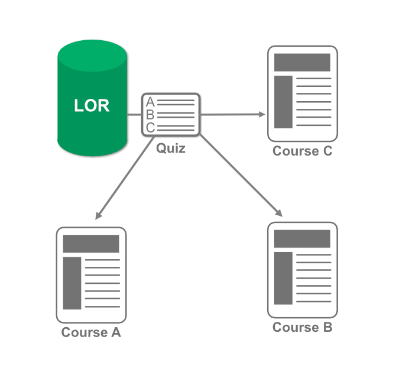

Before we get started with learning the various ways you can retrieve an object, it is important to understand how a learning object is added into your course. No matter which path you take, Brightspace will ask you to choose from three different methods of retrieval: a dynamic link, a locked link, or copy as content.

Using a dynamic link can be one of the most useful methods of adding a learning object to your course. Using this method means that if the learning object is changed or updated, all instances where it is used as a dynamic link will be updated. You will want to use this method if you plan on using the learning object in multiple places and want to keep them all up to date.
Example: A 10 question quiz, published to the LOR, and dynamically linked to three courses.
The author of the object adds five more questions to one of the quizzes. Now, each of the quizzes in the three courses will now have the five new questions added, thus making them all the same.
Advance to continue to the next method.